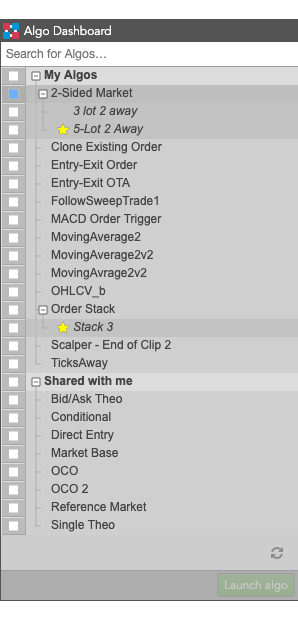
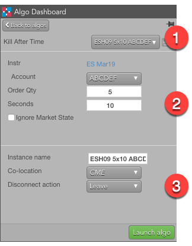
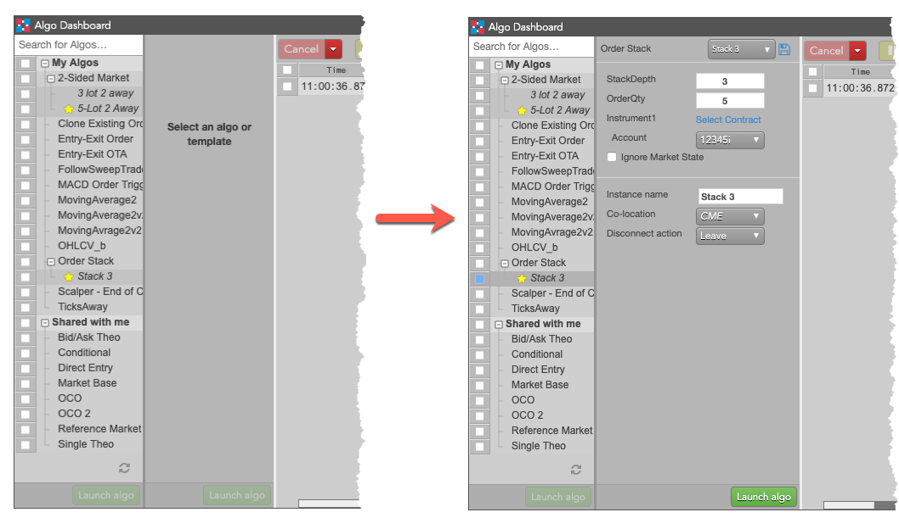
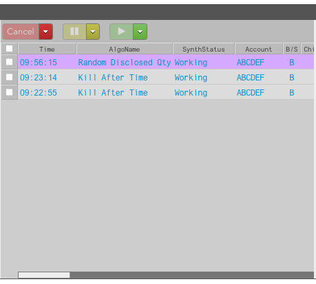
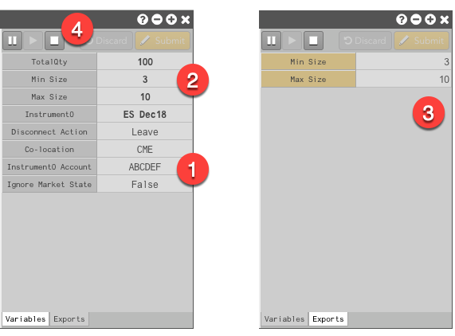
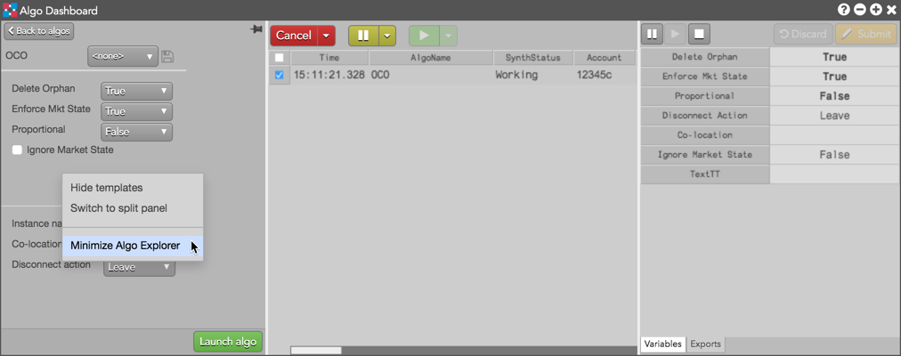
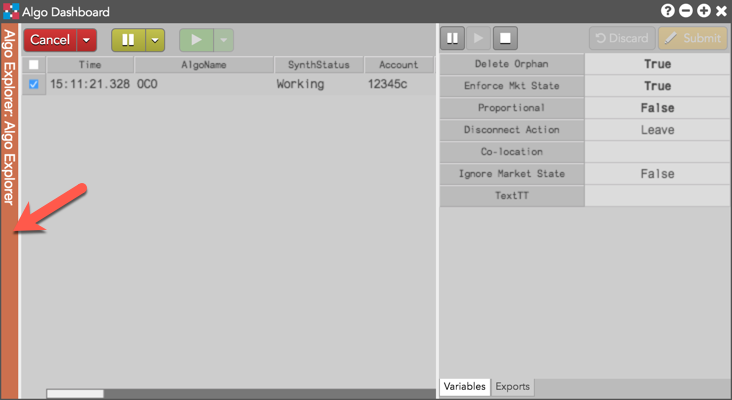

The Algo Dashboard is divided into three separate panes. Located on the left side is the Algo Explorer pane where you can search for and select private or shared algos. When selected, the algo variables display in the center Algo Orders pane where you can edit and start the algo. Any changes made to variables can be saved as a template for future use. After an algo has been started, you can monitor and manage its progress in the Algo Variables pane.
The Algo Explorer pane allows you to quickly locate and manage algos within a tree structure. The top level of the tree is split into two branches: My Algos and Shared with me. The My Algos branch contains all algos that have been deployed with your TT ID. The Shared with me branch contains algos that have been published by TT or shared with you by other algo developers.

Note: The list includes only ADL algos and Order Ticket Algos (OTAs) you have permission to run.
When you select an algo, the Algo Explorer shows the algo details and variables, as shown.

The Algo Explorer split panel view lets you show both the algo list and a selected algo's parameters by selecting Switch to split panel from the Algo Explorer's context menu. The two panels are placed side-by-side in the same space as the Algo Explorer pane, but you an resize one or both the split panels. With the split panel view, you can quickly select and modify algo or template parameters before launching.

Selecting Switch to single panel from the split panel context menu, restores the standard Algo Explorer pane view.
Located on the center of the Algo Dashboard is the Algo Orders pane. At the top of the pane is the Algo Dashboard toolbar, which allows you to cancel, pause, or resume algos. Directly below the toolbar is the Algo order grid, which contains algos that you started.

Note: Algo orders can also be managed from the Order Book widget.
The Algo Variable pane is located on the right side of the Algo Dashboard and allows you to modify user-defined algo variables. It contains two tabs:

Note: All user-defined input and output variables for the algo are also shown in the Algo Orders pane.
You can minimize the Algo Explorer (left) and Algo Parameters (right) panes via the right-click context menu.

Once minimized, the panes can be restored with a left-click on the thin vertical bar.
